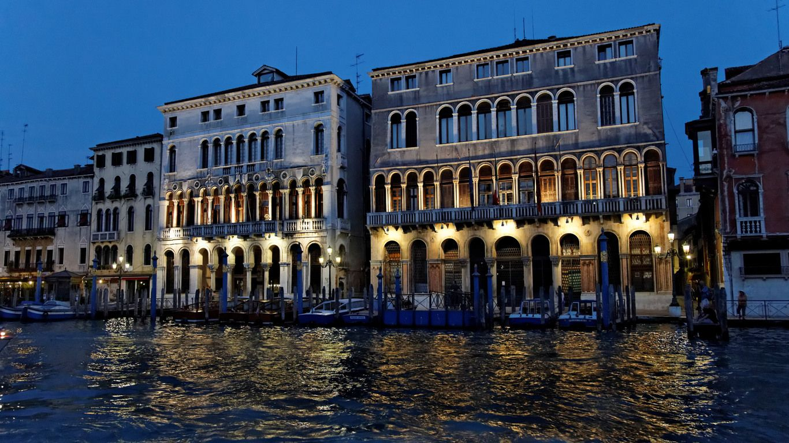
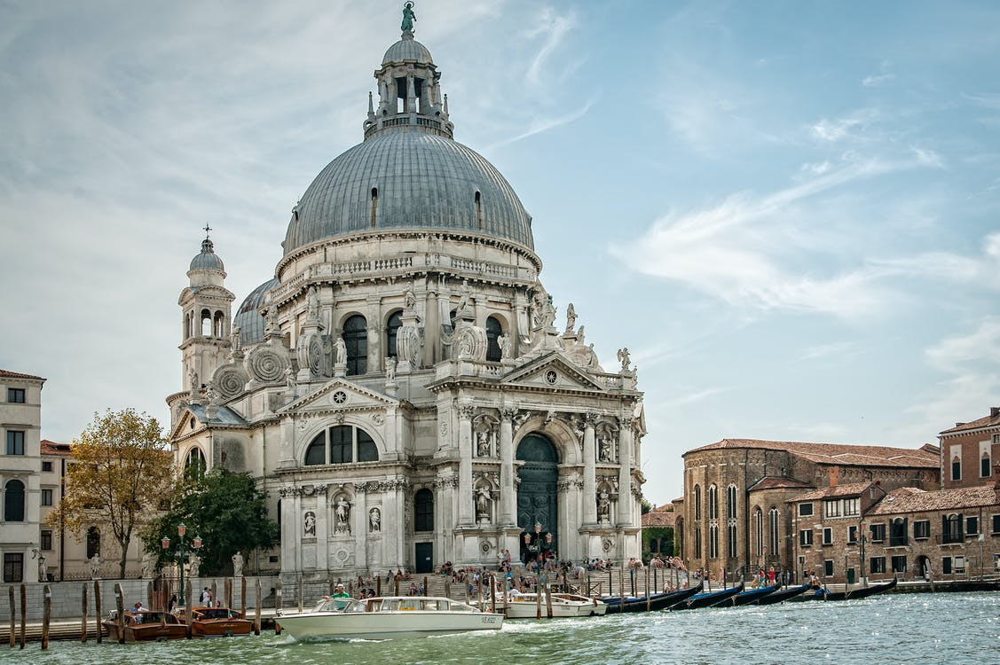
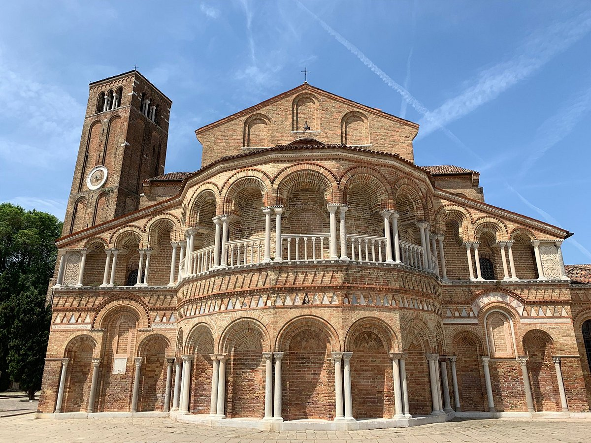
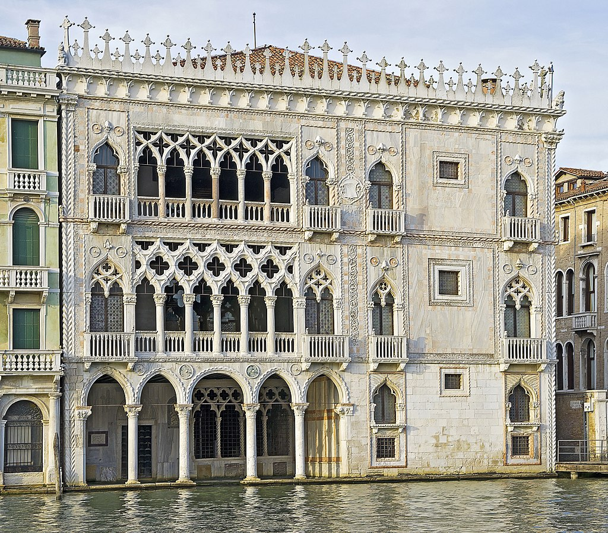
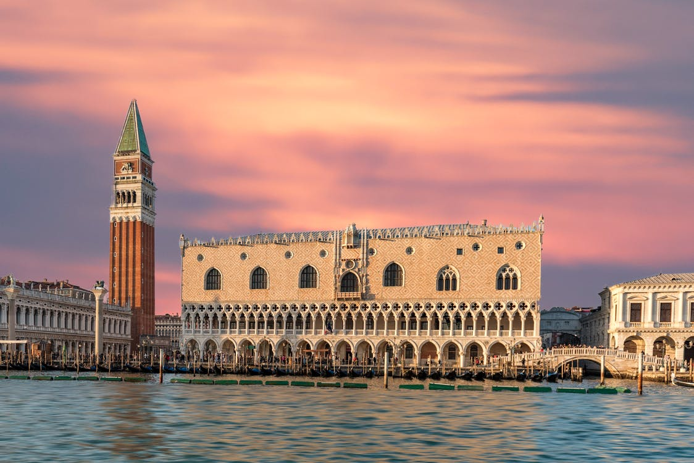
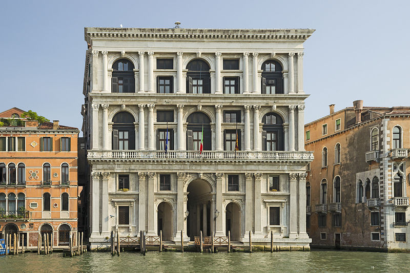
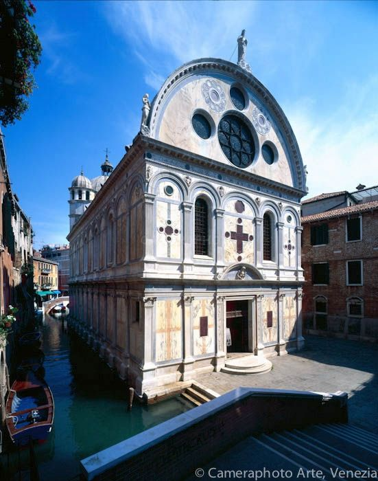
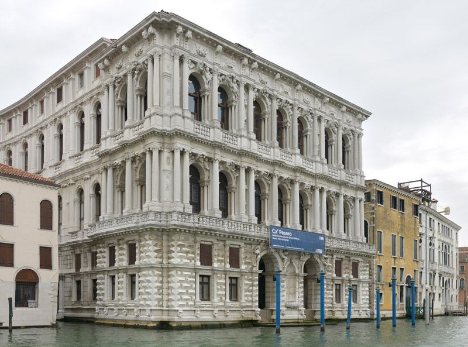
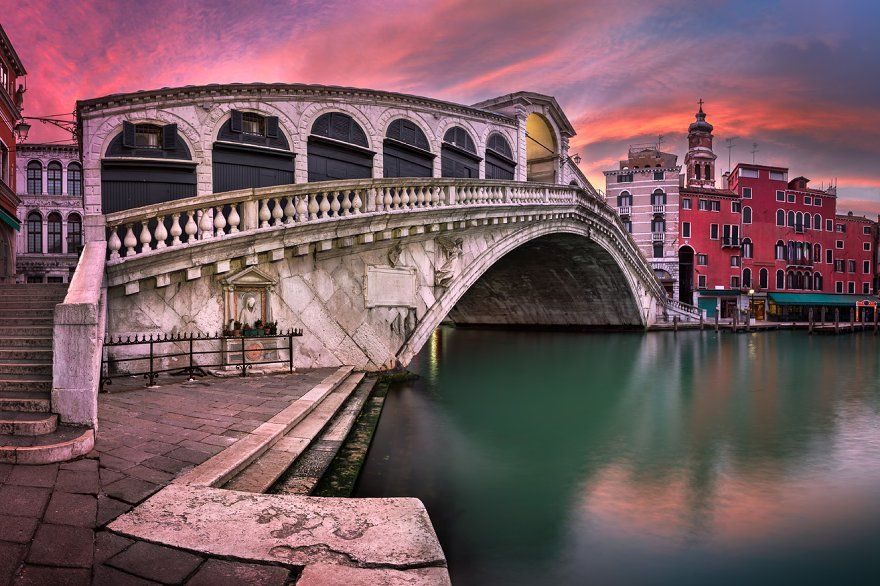
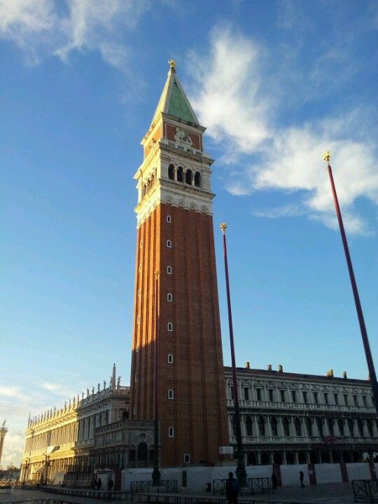

Venise démasquée
La ville aux diverses style
Les édifices à ne pas rater !
ARCHITECTURE VÉNITIENNE VENETO-BYZANTINE
Le style vénéto-byzantin est peu différent du style roman avec ses arcs en plein cintre (en demi-cercle). Mais, il se distingue par ses fenêtres caractéristiques. Le haut est en forme de « fer à cheval », c’est-à-dire se refermant vers le bas de l’arc. Et surtout par l’allongement dans le sens vertical. On savait construire des arcades hautes, mais pas large. Ce style comporte aussi l’emploi de patères, ces bas-reliefs décoratifs souvent ronds qui ornent les façades.
La Ca’ Loredan, la Ca’ Farsetti
Ces 2 palais, la Ca’ Loredan et Ca’ Farsetti à Venise, ont été construits au 13e siècle. Ils conservent en partie leur aspect de style veneto-byzantin, avec de hautes et étroites colonnades et leurs mascarons sur les murs.
Aujourd’hui, ces 2 palais abritent la mairie de Venise.

A gauche la Ca' Loredan et à droite la Ca' Farsetti
Le saviez-vous ?
On les observe mieux depuis la rive opposée du Grand Canal, en franchissant le pont du Rialto tout proche.
ARCHITECTURE VÉNITIENNE ROMANE
Le style architectural roman est plus facilement observable à Venise dans les constructions religieuses que civiles. Les édifices religieux sont relativement fermés, possédant peu d’ouverture afin de faciliter le recueillement.
Dans l’habitation civile, les étages supérieurs accueillent les pièces à vivre, au-dessus du rez-de-chaussée qui sert d’entrepôt. Ainsi, ce rez-de-chaussée est-il souvent assez haut. Les fenêtres forment un arc de cercle vers le haut, soutenues par de fines colonnes, simples ou doubles. Ce style roman est aisément confondu avec le style vénéto-byzantin dans l’architecture civile.

Basilica Santa Maria della Salute
Basilica Santa Maria della Salute
La basilique est de forme octogonale pour évoquer une couronne dédiée à la Vierge. Pour assurer une transition harmonieuse entre les façades et les deux dômes, l’architecte a mis en place des « orecchioni », « grandes oreilles » en italien, volutes coiffées de statues.
Placée en bordure du Grand Canal, elle repose sur plus d’un million de pilotis, pour supporter son poids !
Les façades sont richement décorées de statues de personnages, d’anges, des quatre évangélistes et au sommet du fronton une Vierge à l’enfant. Au sommet du plus grand dôme, se trouve une statue de la Vierge, tandis qu’au sommet du plus petit dôme, c’est Saint-Marc qui est honoré.
Basilica Dei Santi Maria e Donato
Commencée au 7ème siècle, et achevée telle que nous la voyons aujourd’hui au 12ème.
On peut en particulier admirer la mosaïque de l’abside, le superbe chevet (abside extérieure), et le pavage en mosaïques dont les figures ne sont pas seulement géométriques mais aussi figuratives, ce qui exceptionnel, représentant coqs, renards, griffons et paons.
Autre élément à noter qui caractérise cet édifice : le chevet de forme pentagonale et sa double rangée d’arcs soutenus par des colonnes, ceci donnant une étonnante légèreté à la construction. La couleur rosée de la pierre ajoute une note de douceur à la basilique, qui s’élève tout près du Grand Canal de Murano.

Basilica Dei Santi Maria e Donato
LE GOTHIQUE FLEURI TYPIQUE
L’architecture gothique à Venise développe principalement des décorations raffinées, surabondantes sans être trop chargées. Les ouvertures sont particulièrement travaillées. On peut dire qu’il s’agit d’un style vénitien, car c’est un style typique qu’on rencontre essentiellement en Vénétie et dans les anciennes possessions de Venise.

Ca' D'oro
Ca' D'oro
La Ca’ d’Oro est sans doute le palais le plus emblématique de Venise, après le Palais des Doges.
En 1412, Marino Contarini fait construire un palais, dont il espère qu’il surpassera en beauté tous les autres palais de Venise. On surnomme ce palais la Ca’ d’Oro, la maison dorée.
Palais des doges
Le Palais des Doges abritait les appartements du doge et les différents organes de la République. Il se devait donc d’être imposant. Mais, il devait aussi étaler le faste, c’est-à-dire la puissance de Venise aux yeux des délégations étrangères et des personnalités accueillies.

Palazzo Ducale
Le saviez-vous ?
Ainsi, l’intérieur du palais fut décoré par les meilleurs peintres vénitiens, c’est ainsi qu’il est devenu un magnifique musée.
LE STYLE RENAISSANCE
L’architecture Renaissance a donné naissance à des palais imposants, loin de la finesse de la future architecture gothique. L’inspiration est classique, grecque ou romaine. Les piliers et les autres éléments de la façade sont souvent purement décoratifs. On commence à utiliser les balustres. Ainsi, dans ce style Renaissance, tout se veut géométrique, symétrique, équilibre, rythmique.

Palazzo Grimani
Palais Grimani
Au Palais Grimani, on apprécie la galerie, la cour et l’escalier. On admire les peintures décoratives, œuvres d’artistes de l’Italie centrale : Giovanni da Udine, Francesco e Giuseppe Salviati, Camillo Mantovano e Federico Zuccari.
Malheureusement, le mobilier et autres richesses intérieures ont été dispersées. Une partie se trouve au Musée archéologique de San Marco.
Ne pas confondre avec le Palazzo Grimani di San Luca.
Santa Maria dei Miracoli
Santa Maria dei Miracoli est relativement tassée sur elle-même, c’est-à-dire qu’elle n’a pas l’aisance spatiale d’églises immenses. Non, elle est relativement petite et peu éclairée de façon naturelle.
On en reste encore, au XVe siècle, à des églises qui sont faites pour la méditation personnelle davantage que pour impressionner et donner un sentiment de puissance.

Santa Maria dei Miracoli
LE STYLE BAROQUE
Le baroque redonne un peu de fantaisie aux façades Renaissance, en les complétant de colonnes, de
reliefs ou de statues qui accrochent la lumière.
Les édifices sont toujours gigantesques.
Et ils sont bien plus ouverts sur l’extérieur par un ensemble de fenêtres ou de loggias (un balcon à la
fois ouvert et abrité, le plus souvent encastré dans une façade d’étage).
Ainsi, les façades sont bien plus décorées.

Ca' Pesaro
Ca' Pesaro
A la mort du dernier Pesaro, le palais fut acheté par divers propriétaires, dont Felicita Bevilacqua La Masa, grande amatrice d’art.
A la toute fin du XIXe siècle, celle-ci fit don de son palais à la ville de Venise, elle-même propriétaire d’une belle collection établie grâce à la Biennale, pour y loger leurs collections respectives d’art moderne.
LE STYLE BAROQUE
Le baroque redonne un peu de fantaisie aux façades Renaissance, en les complétant de colonnes, de
reliefs ou de statues qui accrochent la lumière.
Les édifices sont toujours gigantesques.
Et ils sont bien plus ouverts sur l’extérieur par un ensemble de fenêtres ou de loggias (un balcon à la
fois ouvert et abrité, le plus souvent encastré dans une façade d’étage).
Ainsi, les façades sont bien plus décorées.
Ca' Pesaro
Ca' Pesaro
A la mort du dernier Pesaro, le palais fut acheté par divers propriétaires, dont Felicita Bevilacqua La Masa, grande amatrice d’art.
A la toute fin du XIXe siècle, celle-ci fit don de son palais à la ville de Venise, elle-même propriétaire d’une belle collection établie grâce à la Biennale, pour y loger leurs collections respectives d’art moderne.
Nos recomandations ;)
Ces monuments ne sont absolument pas à rater si vous allez à Venise, une expérience que vous n'oublirez pas !

Ponti Di Rialto
Pont du Rialto
Le pont du Rialto est un des symboles de Venise. Pont le plus vieux et le plus connu de Venise, il relie les berges du Grand Canal entre les quartiers de San Polo et San Marco.
Le choix de construire ce pont en pierre et marbre d’Istrie dans ces zones marécageuses est une véritable prouesse architecturale. Il mesure 48 mètres de long pour 22 mètres de large. Sa hauteur au-dessus de l’eau atteint 7,50 m en son milieu. Il repose sur plus de 6000 pilotis.
Le Pont du Rialto se compose de trois rampes d’escaliers pour piétons et d’une double rangée de boutiques ouverte vers le Grand Canal par six arches à la montée et six arches à descente. En son centre, les trois voies piétonnes se rejoignent sous une grande arche. Sur les deux côtés sont sculptés deux saints patrons de la ville : Théodore et Marc. Le rendu est magnifique. Le pont est majestueux, fonctionnel et se marie parfaitement avec l’architecture des lieux.
Campanile de Saint-Marc
Le campanil de Saint-Marc est une tour campanaire construite en 912 et reconstruite en 1914. Surnommé autrefois “el padron de casa”, il servait de tour de garde.
La tour, de 98,6 mètres de haut, se trouve seule dans un coin de la Place Saint-Marc, près de la façade de la basilique. Le campanile a une forme simple, avec une tour en brique, de base carrée de 12 mètres de large et 50 mètres de hauteur, au-dessus de laquelle se trouve le clocher avec un logement pour cinq cloches. Le clocher est surmonté d'un cube, sur les faces duquel sont représentés des lions et des allégories féminines de Venise (La Giustizia: Justice).
La tour est surmontée d'une flèche pyramidale, au sommet de laquelle trône une girouette d'or sous la forme de l'archange Gabriel. Le campanile a atteint sa forme actuelle en 1514.

Campanile San Marco

Basilica di San Marco
Basilique de Saint-Marc
La Basilique Saint-Marc est l’édifice religieux le plus important de Venise. La basilique est située sur la Place Saint Marc et a été depuis toujours le centre historique de la vie publique et religieuse de la ville
Sa construction a débuté en 828 pour abriter le corps de Saint-Marc, ramené d’Alexandrie.
La basilique actuelle comporte cinq dômes et a été construite en forme de croix grecque ; elle est devenue la cathédrale de la ville en 1807. Elle compte plus de 4 000 mètres carrés de mosaïques (certaines d'entre elles datent du XIIIe siècle) et présente 500 colonnes remontant au IIIe siècle.